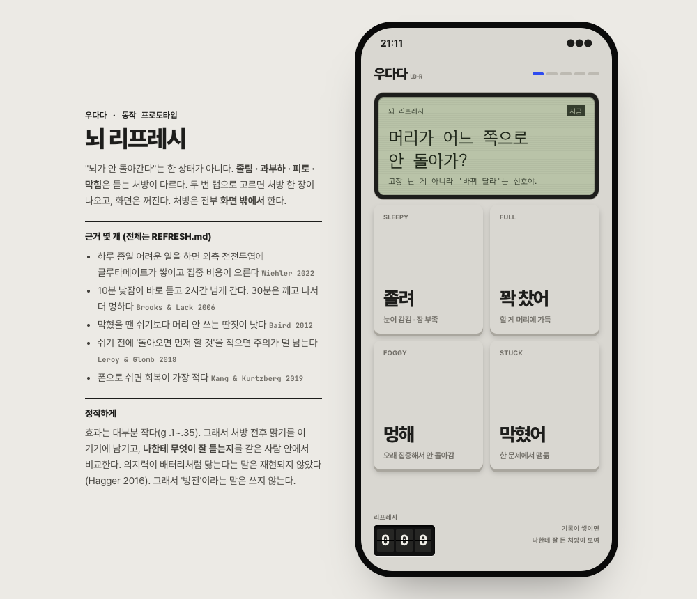
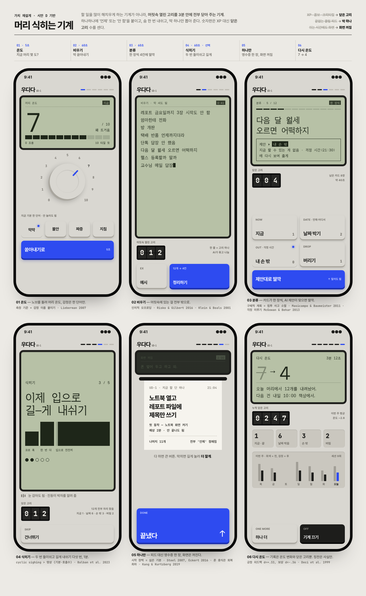
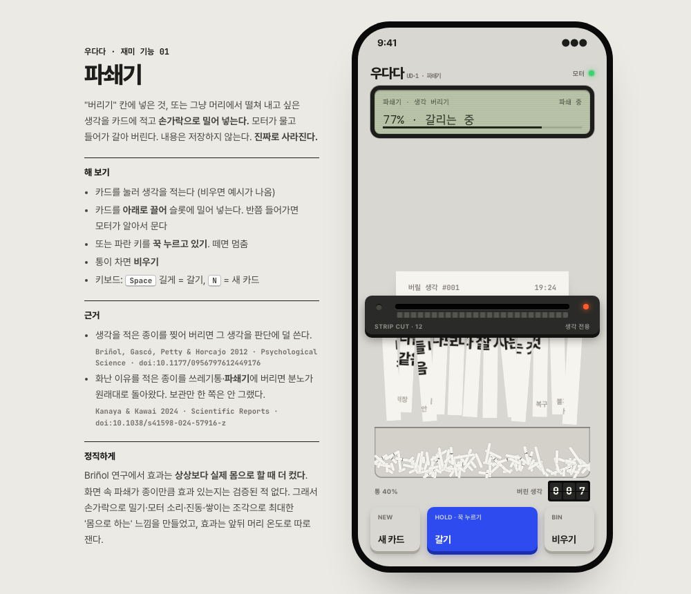
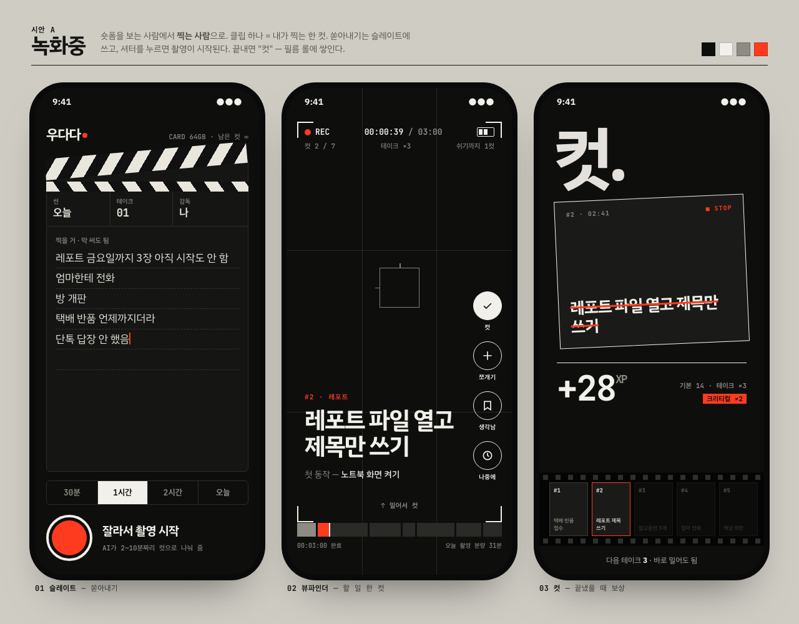
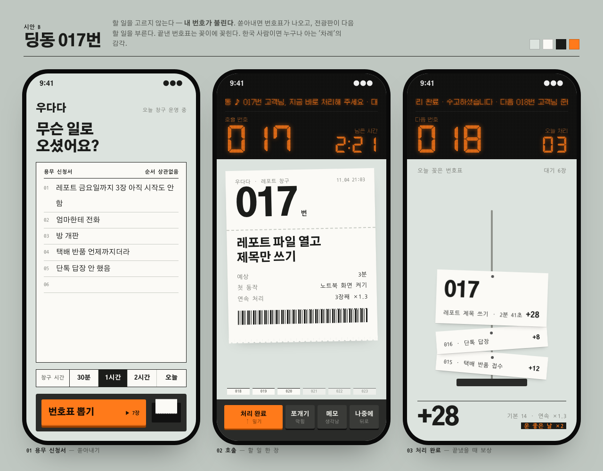
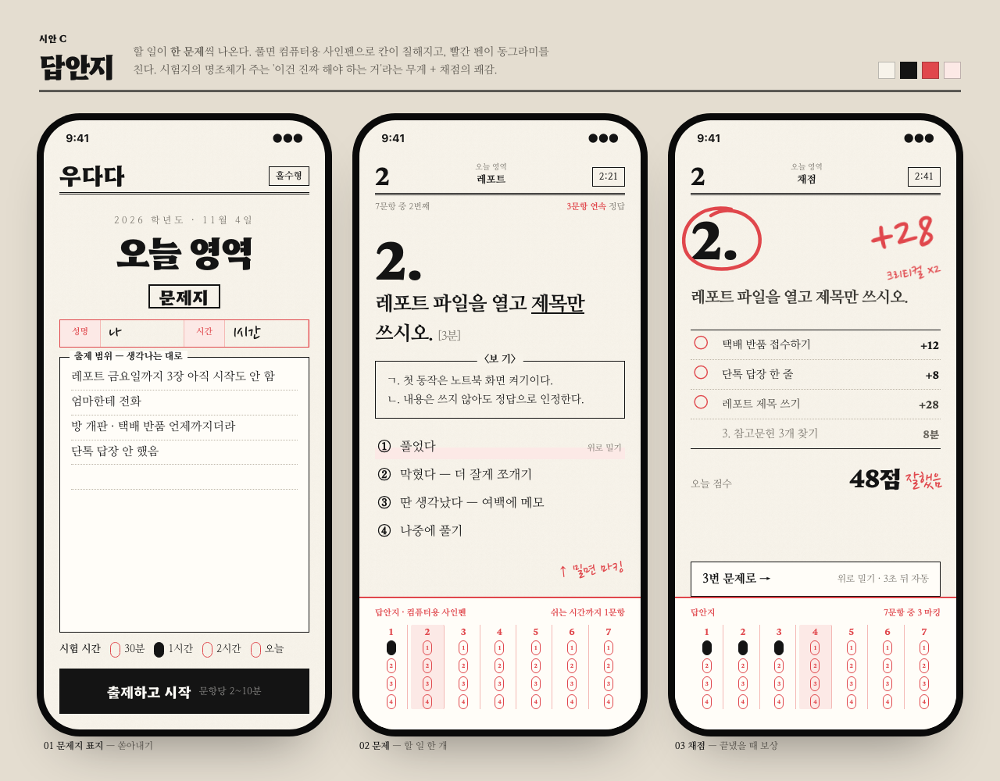
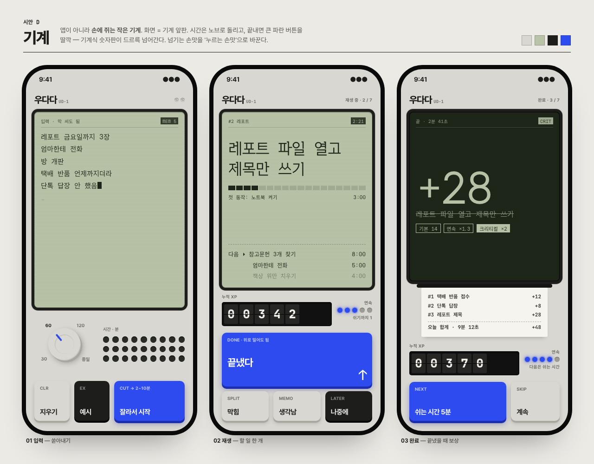

최신 · 동작함뇌 리프레시
"뇌가 안 돌아간다"를 졸림 · 과부하 · 피로 · 막힘으로 나누고, 두 번 탭으로 근거 있는 처방 한 장을 뽑는다. 처방은 전부 화면 밖에서 하고, 돌아오면 맑기를 다시 재서 나한테 잘 듣는 처방을 쌓는다.
- 근거
REFRESH.md: 뇌과학·심리 논문 40편, 근거 강도와 한계 포함- 흐름
- 상태 → 맑기·시간 → 처방 → 화면 꺼짐 타이머 → 돌아옴 → 결과

네 시안 모두 같은 화면 세 장(쏟아내기 · 할 일 한 장 · 끝냈을 때)을 같은 예시 데이터로 그렸다. 장식이 아니라 하나의 은유가 화면 구조를 정한다. 공부 노트: RESEARCH.md
"뇌가 안 돌아간다"를 졸림 · 과부하 · 피로 · 막힘으로 나누고, 두 번 탭으로 근거 있는 처방 한 장을 뽑는다. 처방은 전부 화면 밖에서 하고, 돌아오면 맑기를 다시 재서 나한테 잘 듣는 처방을 쌓는다.
REFRESH.md: 뇌과학·심리 논문 40편, 근거 강도와 한계 포함
시안 D(기계)를 골랐고, 논문 공부 후 가치를 다시 설계했다. 할 일을 해치우는 게 아니라 머릿속 열린 고리를 3분 안에 다 닫는 것. XP 대신 닫은 고리, 피드 대신 딱 하나.
VALUE.md — 논문 24편, 효과 크기·한계 포함
버릴 생각을 카드에 적고 손가락으로 밀어 넣으면 모터가 갈아 버린다. 소리·진동·통에 쌓이는 조각. 내용은 저장하지 않는다.

보는 사람에서 찍는 사람으로. 할 일 = 내가 찍는 한 컷. 뷰파인더 HUD·타임코드·필름 롤.

할 일을 고르지 않고 내 번호가 불린다. 은행·민원실 번호표, LED 전광판, 끝낸 표는 꽂이에.

할 일 = 한 문제. 풀면 OMR 칸이 칠해지고 빨간 펜 동그라미. 명조체의 진지함 + 채점의 쾌감.

앱이 아니라 손에 쥐는 작은 기계. 노브로 시간, 큰 파란 버튼으로 끝, 기계식 숫자판이 드르륵.
